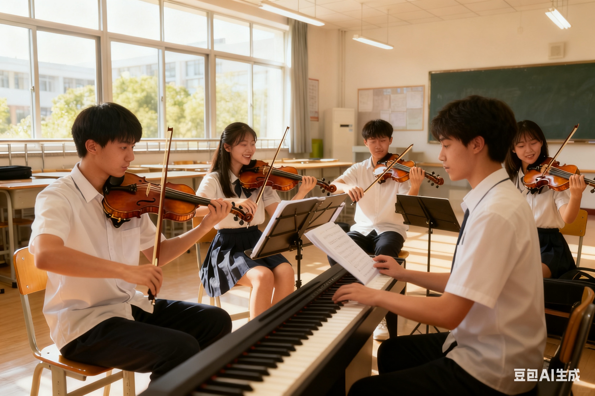

社团简介 | 活动安排 | 风采展示 | 社员故事 | 在线报名
在音乐的浩瀚星空中，小提琴以其独特的音色和深邃的情感表达，成为了无数音乐爱好者心中的“乐器皇后”。我校小提琴社团，正是这样一片孕育音乐梦想、绽放艺术光彩的沃土。自成立以来，我们秉持“以琴会友，以乐传情”的宗旨，致力于为热爱小提琴的学生提供一个展示自我、交流技艺、共同成长的平台。
社团汇聚了来自不同年级、不同专业但同样热爱小提琴的学子，他们中既有初窥门径的新手，也有技艺娴熟的高手。在这里，没有年龄与专业的界限，只有对音乐的无限追求和对小提琴的深情厚谊。我们拥有一支专业且富有激情的教师团队，他们不仅具备深厚的音乐理论功底和丰富的演奏经验，更懂得如何激发每位社员的音乐潜能，引导他们在音乐的道路上不断前行。
社团活动丰富多彩，从基础乐理知识讲解、基本功训练到经典曲目赏析、合奏排练，再到参加校内外音乐会、比赛等，我们力求让每一位社员都能在实践中学习，在学习中成长。除了常规的教学与排练，我们还定期举办音乐讲座、大师班等活动，邀请国内外知名小提琴家、教育家来校交流指导，为社员们提供与大师面对面学习的宝贵机会。
加入我们，你将不仅学会如何驾驭这把四弦之琴，更将学会如何用音乐表达情感，用旋律连接心灵。在这里，每一次拨弦都是对梦想的坚持，每一次合奏都是对团队精神的诠释。让我们携手共进，在琴音悠扬中开启音乐之旅的新篇章！
小提琴社团的活动安排紧凑而充实，旨在全面提升社员的音乐素养和演奏技能。我们根据社员的实际情况和兴趣需求，精心设计了多样化的活动内容，确保每位社员都能在社团中找到属于自己的舞台。
| 小提琴社 2025 年春季学期活动安排表 | |||
|---|---|---|---|
| 活动名称 | 活动时间 | 活动地点 | 负责人 |
| 新成员见面会 | 3 月第 2 周 周五晚 19:00-21:00 | 学生活动中心 音乐教室 302 | 陈老师 |
| 小提琴基础教学公开课 | 3 月第 3 周 周六下午 14:00-16:30 | 李学姐 | |
| 内部音乐会（独奏专场） | 4 月第 4 周 周日下午 15:00-17:00 | 学生活动中心多功能厅 | 张学长 |
| 合奏排练（经典曲目） | 5 月每周六上午 9:00-11:30 | 音乐教室 302 | 王老师 |
| 校外公益演出 | 6 月第 2 周 周六上午 10:00-11:30 | 社区文化广场 | 全体干部 |
| 期末汇报音乐会 | 6 月第 4 周 周五晚 19:00-21:00 | 学校大礼堂 | 陈老师 |
上表为核心活动安排，日常还会穿插音乐讲座、电影赏析、大师班等特色活动，具体通知将通过社团群发布。
以下为社团往期活动精彩瞬间，点击图片可查看详细活动介绍（跳转至 club_intro.html）。

左图为 2024 年期末汇报音乐会全体社员合影，右图为经典曲目《卡农》合奏排练现场。
点击播放查看社团日常训练、演出精彩片段：
李明刚加入社团时，连小提琴的琴弦都认不全，握弓姿势僵硬得像“举着一根木棍”。第一次社团排练，他拉奏的音阶断断续续，音准偏差让他恨不得找个地缝钻进去。但社团的老师没有批评他，反而耐心纠正他的姿势，学长学姐们也主动分享练琴技巧，把自己的练习笔记借给他参考。
从那以后，音乐教室成了李明最常待的地方。每天晚自习后，他都会坚持练琴一小时，从最基础的空弦练习到简单的练习曲，一点点打磨技艺。遇到难点时，他会主动请教老师，甚至把自己的演奏录下来反复听，对比标准音频找差距。大二那年，他报名参加了学校的校园音乐大赛，凭借一首《流浪者之歌》节选获得了器乐组二等奖。站在领奖台上，他说：“是小提琴社团给了我成长的土壤，这里的每一份鼓励都让我不敢放弃，现在我终于能让琴弦发出自己满意的声音。”
张薇性格内向，高中时就喜欢小提琴，但一直不敢在别人面前演奏。大一入学后，她抱着“只默默听课”的想法加入了社团。第一次内部音乐会，社长鼓励大家自愿上台表演，张薇躲在角落，手心直冒汗。这时，旁边的学姐看出了她的紧张，轻声说：“不用怕，我们都是抱着热爱来的，哪怕有失误也没关系。”
在学姐的鼓励下，张薇鼓起勇气上台演奏了一首简单的《小星星变奏曲》。虽然过程中有些许紧张，但台下温暖的掌声让她感受到了前所未有的认可。从那以后，她开始主动参与合奏排练，慢慢学会了与队友沟通节奏、配合力度。大二时，她已经能自信地担任独奏环节，在期末音乐会上演奏《沉思》，细腻的情感表达让全场观众为之动容。“以前我觉得自己很普通，但小提琴和社团让我发现了自己的价值，现在我不仅敢在舞台上演奏，还能主动和别人分享音乐的快乐。”张薇笑着说。
王浩原本是学校篮球队的主力队员，一次偶然的机会，他在校园晚会上看到了小提琴社团的演出，被那悠扬的旋律深深吸引。“当时就觉得，原来音乐可以这么有力量，我也想试试。”于是，他不顾队友的调侃，毅然加入了小提琴社团。
跨界学习的难度远超想象。篮球运动员的手指力量足够，但灵活性不足，按弦时经常按不准位置，节奏感也需要重新培养。刚开始练琴时，手指磨出了水泡，胳膊也酸痛难忍，但他没有放弃——就像在球场上坚持训练一样，他把每天的练琴时间拆分成碎片，利用训练间隙背乐谱，睡前听经典曲目培养乐感。队友们被他的毅力打动，有时还会来音乐教室为他加油。经过两年的坚持，王浩不仅能熟练演奏《梁祝》《蓝色多瑙河》等经典曲目，还能将篮球训练中的团队精神融入合奏中，成为社团里的“跨界榜样”。“练琴和打球其实很像，都需要坚持和团队协作，小提琴让我的大学生活多了一抹不一样的色彩。”
除了个人的成长，社团里的温暖瞬间也让人难忘。去年期末音乐会前，社员林晓突然感冒发烧，无法参加最后的合奏排练，而她负责的第二小提琴声部有一段重要的旋律。眼看演出临近，大家都很着急，这时，三位社员主动站出来，利用课余时间分工练习，一人熟悉旋律，一人配合节奏，一人衔接过渡，最终完美替代了林晓的部分，让音乐会顺利举行。
演出结束后，大家第一时间去看望林晓，还把录制的演出视频带给她看。“那一刻我觉得，社团不仅是学习音乐的地方，更像一个大家庭。”林晓感动地说。这样的故事在社团里还有很多：有人练琴遇到瓶颈时，大家一起帮忙分析问题；有人生日时，大家用小提琴合奏《生日快乐歌》；有人遇到生活烦恼时，队友们会用音乐和陪伴给予安慰。在这里，音乐是纽带，团结与温暖是不变的底色。
你是否对小提琴充满热爱？你是否渴望在音乐的海洋中遨游？请认真填写以下信息，加入我们的大家庭，共同开启音乐之旅！
提交后，我们将在一周内通过手机或邮箱通知审核结果，请保持联系方式畅通。
小提琴社团 · 2025 招新网页
联系我们：violinclub@school.edu